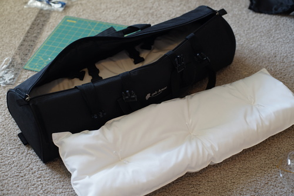

i got out my tripod for 4th of july!!

i also managed to take photos of my lens cap. i wont upload those.
please imagine me saying "but wheres all the stars??" as i look in the viewfinder
the lens flare was just a little insane. i wonder if my modern lens has this sort of flaring. a little fun
we found this little guy on our carpet at 1 am!! ryan accidentally dropped him in the space between the carpet and wall and the baseboard. it took quite an effort to get him out but we did it! we put him out in the unscented rose bush in the yard. i tried to take a picture of him with my +4 close up filter but it didnt come out great.
i watched 6 episodes of dearS. jesus. i cant believe women wrote this. it's not particularly funny or good. idk if i'll finish it. the teacher's whole character is "sexual harassment" nothing more. its just creepy. maybe im too old for shounen media.
im sure you all bought iplehouse dolls back before their style change so you know that they used to come in carrier bags instead of boxes. I got one with my louis and it was way better and useful than any box ive ever gotten
iplehouse decided to use black pillows inside of it though so ive been too terrified to use it with my dollfie dream. honestly the pillow fabric was closer to plastic than fabric though...
anyway i decided to make covers for the pillows a few days ago. when i actually decided to do it though, i took the pillows out and yikes the quality. they even used navy bobbin thread with their black thread on the inside. i just ripped out the stuffing. no reason to save the original pillows imo
the new pillows are just broadcloth so theyre not the nicest quality fabric but they wont stain my doll! i put ribbons through the pillow to keep the stuffing from bunching up inside. i tied them in little bows!